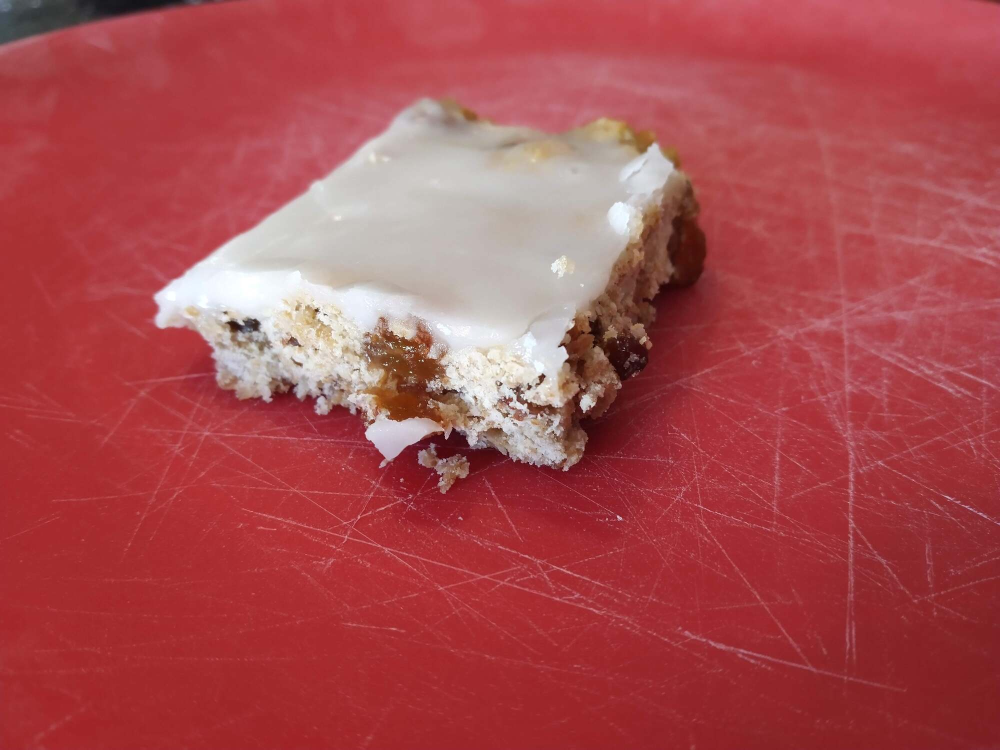

Golden Wheat Slice
 Meat
Meat

Preheat oven to 180 degrees
Grease slice tin with spray oil
4weet-bix1 cupSR flour1/2 cupsultanas1/4 cupbrown sugar
Add crushed weet-bix, SR flour, sultanas and brown sugar .
6 tbspmargarine
Melt margarine in microwave.
1 tbspgolden syrup2 tbspmilk
Add golden syrup and milk to margarine and stir.
Add wet ingredients to flour mixture.
Pour into slice tin and press into shape.
Bake for 20-25 mins.
1 cupicing sugar1 tbsplemon juice1 tbspmilk1 tspmargarine
To mkae icing combine icing sugar, lemon juice, milk and margarine .
Pour over hot slice and leave to cool.